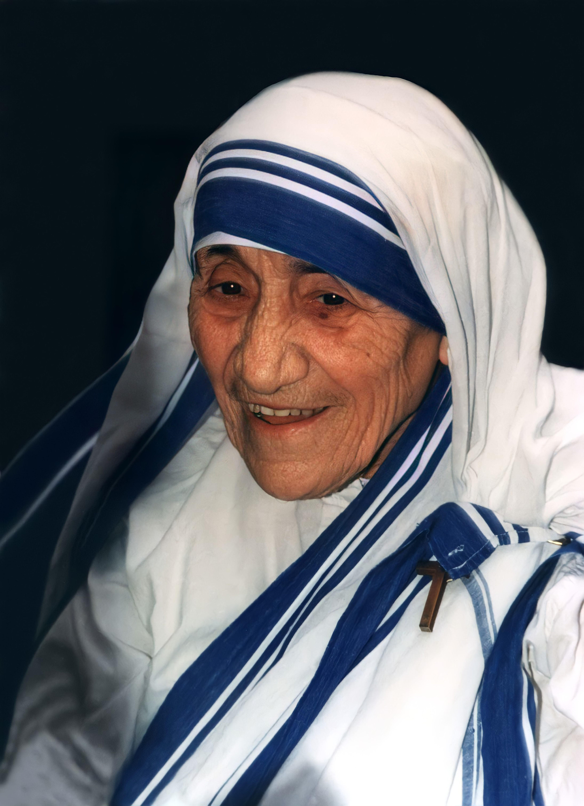
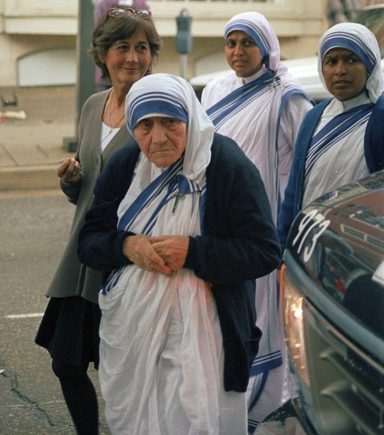

"A santa das sarjetas"
"O que eu faço é apenas uma gota no meio do oceano, mas sem ela, o oceano seria menor."
Nascida em 26 de agosto de 1910 na antiga cidade de Skopje — então parte do Império Otomano, em uma família católica de origem albanesa marcada pela fé e pela caridade. Sua infância foi profundamente influenciada pela mãe, Drana, que ensinava os filhos a ajudar os pobres e a nunca negar alimento ou acolhimento a quem sofresse. Quando Agnes tinha cerca de oito anos, perdeu o pai, fato que trouxe dificuldades e marcou sua vida emocional e espiritual. Mesmo jovem, era conhecida pela oração, sensibilidade e desejo de servir. Crescendo em um lar onde a fé era vivida na prática e a compaixão fazia parte do cotidiano, Agnes começou a sentir um chamado missionário que mais tarde a levaria a deixar sua casa e dedicar toda a vida aos mais necessitados.
Na juventude, Agnes participou intensamente da vida religiosa e se inspirou nos relatos de missionários que atuavam na Índia. Mesmo amando profundamente sua família, sentiu crescer em seu coração o desejo de servir a Deus e aos pobres, decisão que a levou, aos 18 anos, a deixar sua casa e iniciar a missão que daria origem à vida de Madre Teresa de Calcutá.
Ainda jovem, Agnes sentiu que sua vida deveria ter um propósito maior. Aos 18 anos, deixou para trás sua terra, sua família e tudo o que conhecia para partir rumo à Índia, movida pelo desejo de servir a Deus.
Após anos na vida religiosa e no ensino, percebeu que seu chamado ia além dos muros do convento: queria estar ao lado daqueles que sofriam no abandono e na pobreza mais extrema.
Ao caminhar pelas ruas de Kolkata, Madre Teresa de Calcutá deparou-se com uma realidade marcada pela fome, doença e abandono. Pessoas morriam sem cuidado, sem abrigo e, muitas vezes, sem alguém que sequer soubesse seus nomes. Diante desse sofrimento, ela compreendeu que sua missão não era apenas ensinar, mas viver ao lado dos mais pobres e oferecer-lhes dignidade e amor.
Movida por esse propósito, fundou as Missionárias da Caridade, congregação dedicada aos “mais pobres entre os pobres”. Com recursos simples, mas grande dedicação, ela e suas irmãs acolheram órfãos, doentes e moribundos, mostrando que pequenos gestos de cuidado podem devolver esperança e humanidade aos que foram esquecidos pela sociedade.
Nos últimos anos de vida, Madre Teresa de Calcutá enfrentou problemas de saúde e o desgaste causado por décadas de dedicação intensa aos pobres e doentes. Mesmo com o corpo enfraquecido, continuou acompanhando sua missão e incentivando suas irmãs a permanecerem firmes no serviço aos necessitados, demonstrando a mesma fé e perseverança que marcaram toda a sua trajetória.
Em 5 de setembro de 1997, em Kolkata, Madre Teresa faleceu aos 87 anos, deixando o mundo comovido por sua partida. Sua vida, construída no silêncio do serviço e no amor aos mais esquecidos, transformou-se em um legado que atravessou gerações, recordando que a compaixão e a entrega ao próximo podem iluminar até os lugares mais marcados pelo sofrimento.
Os momentos centrais de uma vida de apenas 15 anos
26 Ago 1910
Nasce em Skopje como Agnes Gonxha Bojaxhiu, em uma família católica de origem albanesa.
1919 · 8 anos
Seu pai falece inesperadamente, marcando profundamente sua infância e fortalecendo sua ligação com a fé.
1928 · 18 anos
Deixa sua família e ingressa nas Irmãs de Loreto, iniciando sua caminhada missionária.
1929 · 19 anos
Chega à Índia e inicia sua formação religiosa e trabalho como professora em Calcutá.
1937 · 27 anos
Professa seus votos perpétuos e passa a ser conhecida oficialmente como Madre Teresa.
10 Set 1946
Durante uma viagem de trem, sente o “chamado dentro do chamado” para servir os mais pobres entre os pobres.
1950 · 40 anos
Funda as Missionárias da Caridade, congregação dedicada ao cuidado dos pobres, doentes e abandonados.
1979 · 69 anos
Recebe o Prêmio Nobel da Paz pelo testemunho de caridade e dedicação aos necessitados.
5 Set 1997
Falece em Calcutá aos 87 anos, deixando um legado mundial de compaixão e serviço aos pobres.
4 Set 2016
É canonizada pelo Papa Francisco em Roma e passa a ser oficialmente conhecida como Santa Teresa de Calcutá.
Os prodígios reconhecidos pela Igreja para sua beatificação e canonização
01
Bengala Ocidental, Índia
Monica Besra, uma mulher indiana que sofria de um tumor abdominal considerado grave, afirmou ter recebido cura após orações dirigidas pela intercessão de Madre Teresa e o uso de uma medalha ligada à religiosa. A recuperação foi investigada por médicos e pelas autoridades da Igreja, sendo considerada inexplicável do ponto de vista científico e reconhecida como milagre para sua beatificação.
Aprovado em 2003 · para a Beatificação02
Santos, Brasil
Um engenheiro brasileiro sofria com múltiplos tumores cerebrais e hidrocefalia, quadro considerado extremamente grave e com risco de morte. Após orações pedindo a intercessão de Madre Teresa, houve recuperação súbita e completa, sem explicação médica satisfatória. O Vaticano investigou detalhadamente o caso e o reconheceu como milagre que abriu caminho para sua canonização.
Aprovado em 2016 · para a Canonização

Imagens utilizadas sob licença de seus respectivos autores. Créditos completos disponíveis aqui.
Documentação utilizada para a elaboração deste perfil
motherteresa.org
Centro oficial dedicado à vida, missão e espiritualidade de Madre Teresa
Canonização de Madre Teresa — Cobertura Oficial
Vatican News · setembro de 2016
Madre Teresa: Venha, Seja Minha Luz
Brian Kolodiejchuk · 2008
No Greater Love
Mother Teresa · 1997
Santa Teresa de Calcutá, Jesus chamou-te para levar a luz do Seu amor àqueles que viviam na escuridão.
Pelo cuidado terno e amoroso para com os mais pobres e necessitados, tornaste-te sinal da presença de Deus, do Seu amor e compaixão em meio ao sofrimento e à dor.
Seguindo o teu exemplo, ajuda-nos a reconhecer o rosto de Jesus nos irmãos que sofrem e a servi-Lo com humildade e alegria.
Ensina-nos a levar ao mundo o amor e a misericórdia de Deus. Amém.
· Oração baseada no texto oficial de Santa Teresa de Calcutá ·